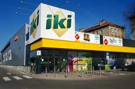

Apie mus
IKI istorijos pradžia – 1991-ieji. Tais metais trys broliai – George’as, Olivier ir Nicolas Ortizai – atvyko iš Belgijos į Lietuvą ir pradėjo puoselėti svajonę įsteigti įmonę. Neilgai trukus jie įkūrė prekybos tinklą. Pirmoji IKI parduotuvė duris atvėrė 1992-aisiais. Nuo tada teikiame naują maisto ir apsipirkimo patirtį – siūlome modernią maisto produktų, apsipirkimo bei aptarnavimo kultūrą.IKI istorijos pradžia – 1991-ieji. Tais metais trys broliai – George’as, Olivier ir Nicolas Ortizai – atvyko iš Belgijos į Lietuvą ir pradėjo puoselėti svajonę įsteigti įmonę. Neilgai trukus jie įkūrė prekybos tinklą. Pirmoji IKI parduotuvė duris atvėrė 1992-aisiais. Nuo tada teikiame naują maisto ir apsipirkimo patirtį – siūlome modernią maisto produktų, apsipirkimo bei aptarnavimo kultūrą.
Tapome pirkėjų lojalumo programos pradininkais, taip pat išleidome privačius prekių ženklus ir pirmieji įdiegėme savitarnos kasas. Taip netrukus tapome didžiausiu pagal turimų parduotuvių skaičių mažmeninės prekybos tinklu Lietuvoje. Mūsų prekybos tinklas įsteigė daug parduotuvių ir pristatė naujus jų formatus – pavyzdžiui, IKI EXPRESS. Tapome pirkėjų lojalumo programos pradininkais, taip pat išleidome privačius prekių ženklus ir pirmieji įdiegėme savitarnos kasas. Taip netrukus tapome didžiausiu pagal turimų parduotuvių skaičių mažmeninės prekybos tinklu Lietuvoje.
Nors nuo tada, kai atvėrėme pirmosios tinklo parduotuvės duris, daug kas pasikeitė ir patobulėjo, IKI ištakos bei tapatumas liko tokie patys: mes žinome, kas yra geras maistas, suprantame, ko nori ir ką renkasi lietuviai, kruopščiai ir kompetentingai atrenkame, paruošiame geriausią, šviežiausią maistą ir kokybiškai aptarnaujame klientus.
„Džiaugiuosi prisijungęs prie „Palink“ finansų tarnybos ir stiprios „Iki“ komandos Lietuvoje, kur drauge galėsime integruoti geriausias „REWE“ grupės patirtis, – sako Jan Karrasch, UAB „Palink“ finansų direktorius. – Siekiant plėsti „Iki“ rinkos dalį ir patenkinti vartotojų poreikius, ateinančiais metais neišvengiamai reikės investuoti į logistikos, skaitmenizacijos ir tinklo plėtrą.“